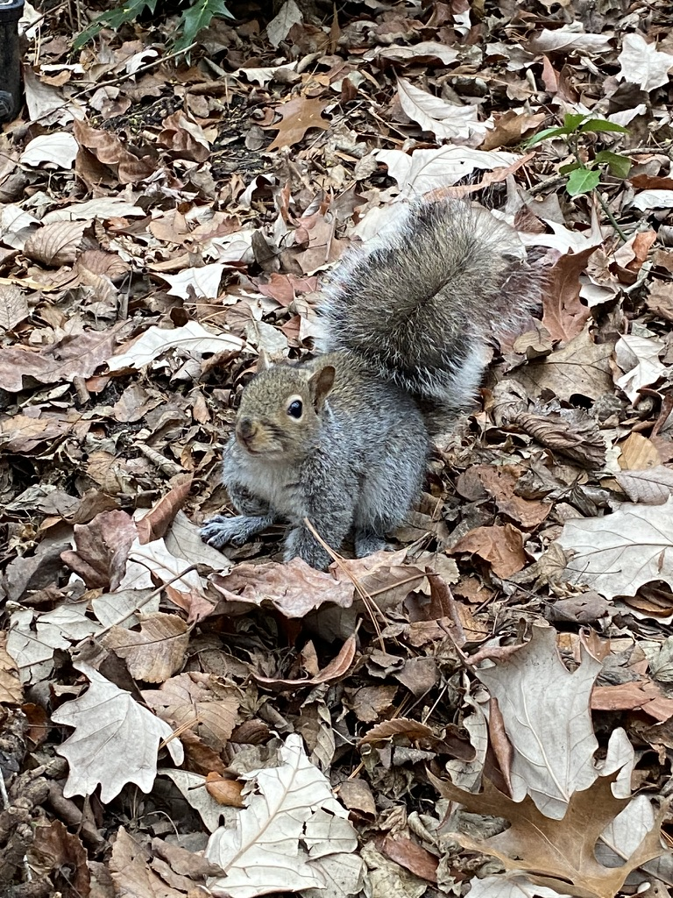
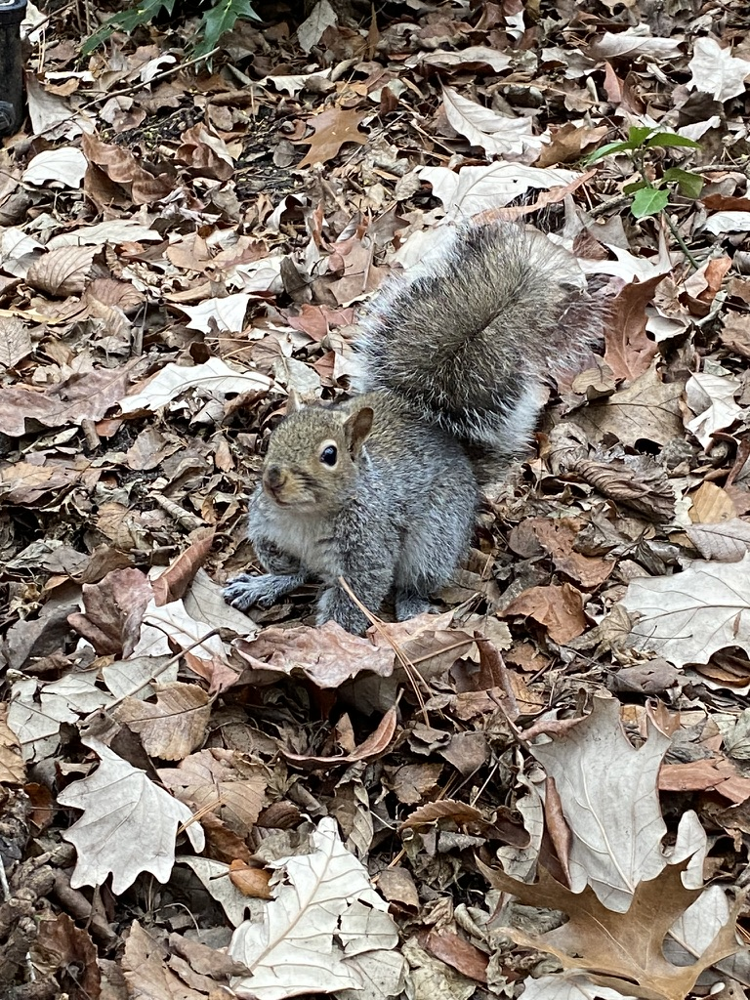
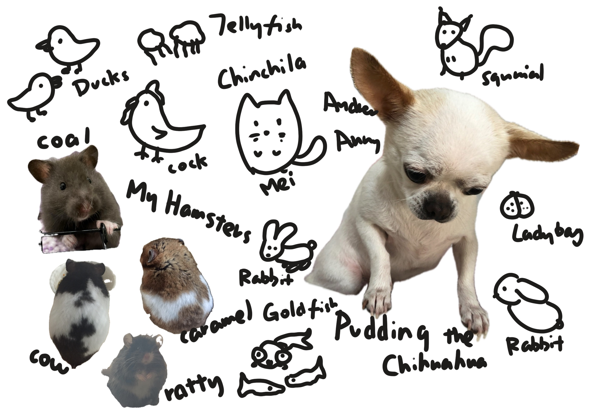

The Beginning
From the South West part of China to the largest city in the State, Minnie visited each zoo and aquarium she could. Now she's inviting you to travel along her way to find out the beauty of wildlives and the beautiful creatures on this blue planet.
Click to see Minnie's favourite squarriel.

Click to see Minnie's favourite squarriel.
Her Zoo Experiences
Singapore Zoo
Minnie once went to the Gorilla House when she was a child and fell in a yellow raincoat on a rainy day at the gate, and her butt hurt.
Ocean Park Hongkong
Minnie went there at a very young age, so that now she only remembers that her mother bought herself a large sea lion in a sailor suit, and Minnie didn't like the it.
New York Zoos
Minnie decided to tell you about this later.
New York Aquarium
Minnie said this will be something you can explore later on.
Minnie and Her pets
From a very young age, Minnie loves to keep pets, all kinds of pets, you name it, she raised it. Check out her childhood buddies below!This photo captures Minnie during one of her favorite zoo visits, interacting with the animals and learning about their habitats.
Minnie at the Zoo
This photo captures Minnie during one of her favorite zoo visits, interacting with the animals and learning about their habitats.

Minnie's Favorite Animals
Some of Minnie's favorites include red pandas, otters, and meerkats. She believes every animal has a story worth telling.

Her Legacy

Minnie love to feed pigeons at union square, the best record of pigeons standing on her is 9.